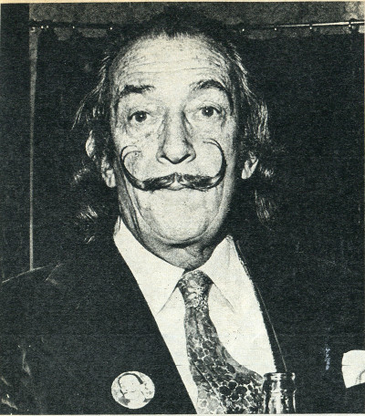

Cualquiera sabe que los chicos llegan llorando a este muncho pero seguramente yo me desgañité en lágrimas ese 11 de mayo de 1904 en Figueras, España. Quizás fue porque lloré largo y tendido que mi padre me bautizó Salvador Felipe Jacinto Dalí, aunque todo indica que la llorada era una suerte de defensa o queja ante los problemas que me esperaban: físicamente resulté ser una "copia fiel" de un hermano de 7 años que había muerto de meningitis tres años antes de que yo naciera y que para peor también se llamaba Salvador.
Mis primeros recuerdos se remontan a una tarde en que mi padre, o el escribano burócrata (como lo llamaría más tarde ante los criados), entró con un retrato de mi hermano para colgarlo en mi pieza mientras mi madre lo seguía con otro de Cristo crucificado, dejándome luego solo allí frente a los dos cadáveres colgados. Más tarde me enteré que el Cristo era una pintura de Velázquez y que mi hermano había sido un gran chico y que, naturalmente, había ido al cielo, igual que Cristo. Esa imagen de mi hermano subiendo al Paraíso de la mano de Cristo, al igual que otras falsas identificaciones y confusiones de personalidad que solían hacer los vecinos y amigos, terminaron presidiendo mis sueños, lo que al poco tiempo me indicó que en realidad yo no era un solo Salvador Dalí sino dos: mi hermano muerto y yo. Allí empezó mi trauma: el Salvador vivo era apenas un espejo del otro muerto, su retrato fiel, pero no un ser humano con luz propia. Todavía retumban en mis oídos las palabras usuales de mi madre antes de que yo saliera: "Abrígate bien, lleva la bufanda, no sea cosa que te engripes y mueras de meningitis como Salvador". Yo, el Salvador vivo, no funcionaba si no era en relación subordinada al muerto; mi yo real fue violado y desposeído. Fue allí cuando empecé a odiar terriblemente a mi padre. Choqué con él a los nueve años en el jardín, al que yo había ido en esa tarde de sol para hacer algunos dibujos. Tan pronto vio el sol y las espigas con forma de fideos que yo había dibujado rompió la hoja y gritó: "Por empezar, ni el sol ni las espigas pero seguramente yo me desgañité en lágrimas ese 11 de mayo de 1904 en Figueras, España. Quizás fue porque lloré largo y tendido que mi padre me bautizó Salvador Felipe Jacinto Dalí, aunque todo indica que la llorada era una suerte de defensa o queja ante los problemas que me esperaban: físicamente resulté ser una "copia fiel" de un hermano de 7 años que había muerto de meningitis tres años antes de que yo naciera y que para peor también se llamaba Salvador.
Mis primeros recuerdos se remontan a una tarde en que mi padre, o el escribano burócrata (como lo llamaría más tarde ante los criados), entró con un retrato de mi hermano para colgarlo en mi pieza mientras mi madre lo seguía con otro de Cristo crucificado, dejándome luego solo allí frente a los dos cadáveres colgados. Más tarde me enteré que el Cristo era una pintura de Velázquez y que mi hermano había sido un gran chico y que, naturalmente, había ido al cielo, igual que Cristo. Esa imagen de mi hermano subiendo al Paraíso de la mano de Cristo, al igual que otras falsas identificaciones y confusiones de personalidad que solían hacer los vecinos y amigos, terminaron presidiendo mis sueños, lo que al poco tiempo me indicó que en realidad yo no era un solo Salvador Dalí sino dos: mi hermano muerto y yo. Allí empezó mi trauma: el Salvador vivo era apenas un espejo del otro muerto, su retrato fiel, pero no un ser humano con luz propia. Todavía retumban en mis oídos las palabras usuales de mi madre antes de que yo saliera: "Abrígate bien, lleva la bufanda, no sea cosa que te engripes y mueras de meningitis como Salvador". Yo, el Salvador vivo, no funcionaba si no era en relación subordinada al muerto; mi yo real fue violado y desposeído. Fue allí cuando empecé a odiar terriblemente a mi padre. Choqué con él a los nueve años en el jardín, al que yo había ido en esa tarde de sol para hacer algunos dibujos. Tan pronto vio el sol y las espigas con forma de fideos que yo había dibujado rompió la hoja y gritó: "Por empezar, ni el sol ni las espigas son así de retorcidos, y para terminar te ordeno que dejes estas porquerías y te dediques a lo que en verdad te convertirá en hombre de bien: la escribanía". Esa noche lloré de rabia: no sólo me habían robado mi verdadera personalidad identificándome con un ser muerto sino que trataban de anular la poquita luz que de mí salía. Sin embargo, seguí dibujando a escondidas de mi padre, pero me volvió a sorprender, esta vez con una naturaleza muerta de tres limones que el día anterior había ganado el primer premio de 30 dólares en la escuela. Me acurruqué en un rincón para recibir el reto y la cachetada pero en su lugar me encontré con esta sorprendente actitud: "Si cada limón real cuesta una peseta y tú consigues 10 dólares por él es porque tienes talento. Mientras los limones sean limones en tus pinturas sigue pintando, hijo...". Entonces me mandó a estudiar dibujo a la escuela municipal de Figueras y luego salté a la Escuela de Bellas Artes de San Fernando, en Madrid. Al poco tiempo cumplí mis 22 años y cuando me quise dar cuenta, los limones que yo veía en la realidad y que mi padre solía admirar en mis telas ya habían dejado de ser limones para convertirse en cualquier cosa, pero, por sobre todo, en reflejos pesadillescos y trastrocados de mi yo desposeído, que me había quitado mi hermano muerto con el apoyo y consentimiento de mis padres. Allí volví a chocar con mi padre pero esta vez no lo pude soportar: junté el poco dinero que tenía y me fugué a París desde Barcelona EN TAXI!!!. Allí me uní al movimiento surrealista, me hice amigo de Picasso, de Miró, de Buñuel y de tantos otros, y recién en septiembre de 1935 encontré el camino para solucionar el trauma de identificación con mi hermano muerto a través de una mujer excepcional, Elena Diaranoff, rusa, ex mujer del poeta Paul Eluard y actual esposa mía, a la que bauticé Gala por el color y la nueva dimensión que dio a mi vida. Fue por eso que la pinté como una madre frente al hijo pero vestida igual que él, como si el chico la mirara a través de un espejo o viceversa: Gala fue como la Alicia, de Lewis Carroll, me ayudó a salir de la irrealidad de mi propia antimateria, y volver así a la realidad, es decir pasar por mi propio espejo, liberarme de mi psicosis y verme curado. La liberación abarcó todos los aspectos de mi vida: dejé París, cambié el surrealismo por el método críticoparanoico y tras veinte años de ausencia volví a mi casita de Figueras, donde mi padre me recibió fritando: "Yo sabía, yo sabía que volverías arrepentido y dispuesto a estudiar para escribano". No le contesté, corrí hasta su escritorio y tomé en mis manos lo que más odiaba de mi padre cuando era niño: su tintero. Entonces lo estrellé contra la pared blanca, en la que se formó un manchón pesadillesco, muy en estilo con lo que yo estaba haciendo en ese momento, y grité: "No, no soy ni quiero ser escribano. Tu hijo está allí, en esa mancha deforme en la pared blanca", y me largué.
Han pasado muchos años desde mis primeros limones muertos por los que gané 30 dólares. Cada cuadro mío se cotiza ahora a 100 mil dólares o más. Ya abandoné el método críticoparanoico también para reemplazarlo por los hologramas, en los que combino arte y tecnología. Estoy completamente curado del trauma de identificación con mi hermano muerto y, por supuesto, sigo al lado de Gala, mi querida Gala. Dicen que el nombre identifica al ser y quizás por eso ahora firmo Philipus Hyacinthus (por mi padre); Salvador Dalí (por mí) y Domenech, por mi madre. Ya no siento ningún odio por mis padres: a esta altura de la vida tengo la suficiente entereza paranoica como para aceptar que sin un Dalí muerto no podría existir este Dalí vivo. Mi pintura ha sido y será un reflejo de estas dos personalidades: una monstruosa y retorcida inspirada por mi otro yo, que era mi hermano muerto haciéndome sombra, y otra más liberada y anárquica, que representa a mi verdadero yo. No me quejo de nada porque sé que en cada Paraíso hay un infierno y en cada Satanás un Jesús deformado. No creo que nadie pueda descubrir su yo verdadero sin pasar primero por el espejo propio y por el cadáver de alguno de sus yo anteriores.
SALVADOR PHILIPUS HYACINTHUS DALI Y DOMENECH
“Gente y la actualidad” N° 396- 22 de febrero de 1973 – Págs. 54 y 55
